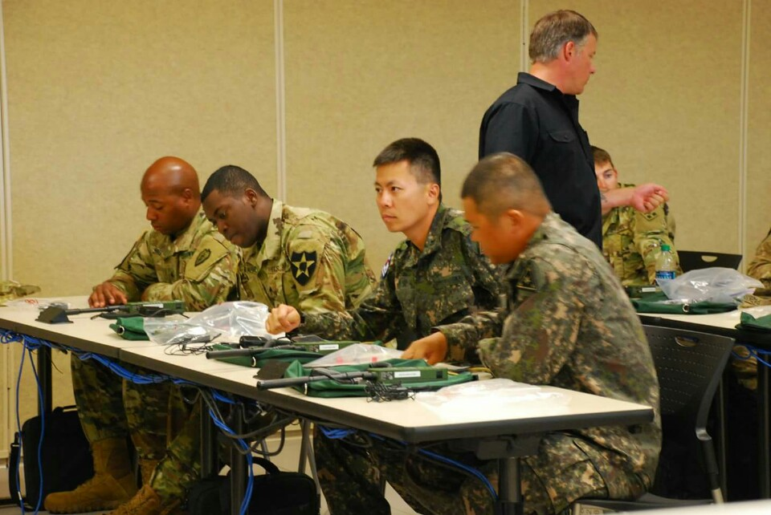

조진호
1. 개요
대한민국의 군인이자 지식 탐구가. 1981년 1월 14일생. 육군 부사관으로 재직 중이며, 다양한 기술과 조직 경험을 바탕으로 성실하고 책임감 있는 인물로 평가받는다.
2. 생애
- 1981년 1월 14일, 서울에서 출생
- 건양대학교 군사학과 졸업
- 육군 부사관으로 복무 중
- 현재 건양대학교 대학원 재난안전소방학과 재학
3. 주요 활동
<
- 육군 제2보병사단 32연대 3대대 분대장~부소대장
- 美 육군 부사관학교 보병 중급과정 수료
- 육군부사관학교 양성 담임교관
- 육군부사관학교 초급 담임교관
- 육군부사관학교 양성교육대 행정보급관


4. 성격 및 평가
- 정확하고 신속한 업무 처리
- 규율과 융통성을 모두 갖춘 태도
- 후임 양성에 헌신적인 태도
5. 기본 정보
- 이름: 조진호
- 생년월일: 1981년 1월 14일
- 직업: 육군 부사관
- 소속: 대한민국 육군
- 학력: 건양대학교 군사학과 졸업
- 현재: 건양대학교 대학원 재난안전소방학과 재학 중
- 이메일: manwlflove@gmail.com
- 연락처: 010-2329-7517
- 주소: 전라북도 익산시 여산면
- 가족관계: 1남 3녀 중 장남
6. 여담
- 취미는 영화 감상, 여행, 고양이 돌보기
- 기계식 키보드와 커피를 즐김
- 디지털 생산성 도구에 관심이 많음
- ChatGPT와 같은 도구를 적극 활용 중